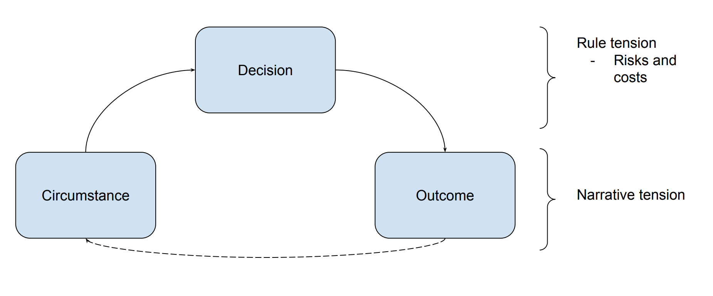

When I design campaigns and run encounters, I want to create longlasting memories my friends and I can bond over for years to come. One kind of moment enshired to tabletop legend is when a player uses their abilities to spectacular effect when the stakes are high. I recall 3 back-to-back criticals on the big bad right when the party was about the perish. Or when the wizard wove a wall of stone through the battlefield, turning the tide of war. These situations often happen when the narrative is tense, by game mechanics and rules magnify the tension, whether by dice rolls or exceptional tactics.
In this post, I propose an encounter model to show how the rules and mechanics of a game can influence the tension a player feels when they make a decision. This model can be used choose role-playing systems suitable for the campaign. For example, in another post I use this model to show why I think Gumshoe is the best system for investigative role-playing games. Dungeon Masters can also use this model to create new systems or modify existing ones.
My goal is to provide a tool Dungeon Masters can use to make better campaigns and encounter, like Justin Alexander’s Node-Based Scenario Design did for investigative role-playing games.

Circumstance, Decision, Outcome is a three-stage encounter model.
The circumstance is the situation described to the player. For example: > The guards walk into the shop and see you with the jewels.
The decision is the choice the player makes in that moment. > I attempt to jump through the window and flee.
The outcome is what happens after the decision. It is the new circumstance. > You jump through the open window and land gracefully in front of a squard of guards.
Although each stage effects tension, circumstance and outcome control the degree of tension. Confronting the villian to save the world is more tense than sneaking past a guard to steal gold.
If the narrative sets the tension in the circumstance, then player choice amplifies tension in the decision. The rules govern what choices a player may make. Each choice comes with risks and costs that create tension.
Risk is inherent to decision making, but there are two ways rules influence risk: by adding a random chance for failure, and increasing the likelihood of mistakes via game complexity.
A pure random chance of failure is tense–think Russian roulette. This kind of tension happens when players have no control and wish they did. This, however, is tension of circumstance not decision. For the decision stage to increase tension, the player willingly chooses the risky option.
The fear of making mistakes also increases tension. Mistakes occur when the situation is complex and the wrong decision could lead to failure. When players opt for a complicated tactic or have to choose the right spell out of dozens there is a risk they made a mistake. The tension here can also manifest outside the narrative: the fear of looking stupid or the opportunity to look smart.
Most role-playing systems combine randomness and complexity to heighten the tension, and these are the ones I like. I want my players to think “I hope this works!”
A decision has a cost if it depletes a resource managed by the game rules. Players may fear that spending this resource was a mistake, increasing the tension as I described above. The difference is that rules prevent the same decision from being made in the future. Whereas if the decision didn’t have a cost, the choice can be made again if the circumstance allows.1
Costs increase tension now and in the future. For example, if a player spends a 9th level spell slot they pray for a good outcome–they won’t get the chance again. Likewise, the loss raises tension in future encounters, because they may wish they had that resource–tension from regret.
By identifying the game mechanics that increase
Throughout this article, I’ll refer to three systems: - Gumshoe - Dungeons and Dragons 5th Edition - Lasers and Feelings
Role-playing systems are rules used to
I design campaigns so players can solve challenges with their skills.
As a Dungeon Master (DM), I want characters to solve challenges with their personality and skills. I design campaigns with this in mind.
In this article, I propose a tension-resolution framework for role-playing games. Furthermore, I will show that we can use the framework to improve mechanics for investigative role-playing.
Here’s how I like to run investigative role-playing games. I begin with a hook or premise. The players create a character movitated to investigate the hook. I populate the world with clues. And the players decipher the clues to unravel the mysteries.
The characters collect the clues, but the players have to connect the dots. Similar to deduction games like Sherlock Holms Consultin Detective. Players can’t roll to make me to explain the clues for them. So I ensure the clues are internally consistent, lead to a conclusion, and that the players can figure it out. To read how this works in practice, check out this Shut Up & Sit Down article. For Dungeon Masters, Justin Alexander wrote the definitive theory on running investigations.
Finally, I include a role-playing system used to resolve conflicts and provide constraints. In this article, I’ll show why I think Gumshoe systems like Trail of Cthulhu are best.
I’m want to use a system that maximizes tension and minimizing complexity.
Investigative role-playing is a combination of two genres. Deduction games, such as , and mechanical dice-based role-playing systems such as D&D 5e.
Deduction elements provide mystery, logical puzzles, and a sense of progress by collecting clues. The role-playing systems offer gaming mechanics such as random chance, resource management, and abilities These mechanics resolve conflict and provide role-playing constraints.
My campaign, The Curse on Moonlight Bay, is a good example about what I am trying to achieve with an investigative role-playing system.
Each campaign starts with a hook or premise. In The Curse on Moonlight Bay, there are 3: - an exocrist has gone missing - prohibition gangsters are smuggling liquor - the hospital claims they have a cure for mass hysteria
The players create a character movitated to investigate the hook. I populate the world with internally consistent clues. And the players decipher the clues to unravel the mysteries.
Sidebar: the characters collect the clues, but the players have to connect the dots. Players can’t roll to make me to explain the clues for them. So the Dungeon Master has to put in a lot of work ahead of time to sure the players can solve the mystery. To read how this works in practice, check out this Shut Up & Sit Down article. For Dungeon Masters, Justin Alexander wrote the definitive theory on investigation campaigns.
Gaming mechanics
For the deduction to be rewarding, the clues must be internally consistent and lead to a logical conclusion.
Mechnical elements need to be simplified enough that the don’t overwhelm and render the deduction elements useless.
Another way to think about it: mistakes without mechanical costs are only opportunity costs.↩︎